5.1.6. 电流环整定¶
本节就 FOC 中电流环整定的以下几个方面提供指导：
什么构成一个整定良好的电流控制器？
如何在 MCAF 中调整电流控制环增益？
如何使用 motorBench 的 Tune（整定）页面中的自动整定® Development Suite 来简化增益整定？
motorBench 中默认的电流控制环整定准则® Development Suite 是否足以满足大多数系统的要求？
5.1.6.1. 背景¶
如 FOC 组件 一节中关于 电流控制所述，MCAF 使用一对带饱和与抗积分饱和的 PI 控制器。PI 控制增益为比例增益 \(k_{ip}\) 和积分增益 \(k_{ii}\)。
FOC 中的电流环整定可能是一项具有挑战性的任务，原因有若干且相互关联：
所关注的控制变量（d 轴和 q 轴电流）无法用测试设备直接测量，仅作为微控制器内的软件变量存在
除了直接评估 dq 坐标系电流的阶跃响应外，评估控制性能是一项不甚明确的任务
控制问题不易察觉
电机可能转动得非常平稳，但仍表现出糟糕的电流控制行为
可观察到的效果通常是可听见的，但指示不明确，如滴答声、闷响、颤振声、嘶嘶声或尖啸声
测量相电流时看到的正弦畸变可能被过度关注
FOC 是一个 2 × 2 的 MIMO 控制系统，存在一些微妙之处（所有 PMSM都存在电感交叉耦合和饱和行为，对于具有 转子凸极 或快速机械时间常数的电机还存在各向异性行为）
好消息是，FOC 的电流控制器整定通常比较宽容，不必达到最优，且 motorBench® Development Suite 计算出的控制增益通常是可接受且偏保守的。
5.1.6.2. 评估控制性能¶
电流控制器有以下几个目标：
参考值跟踪 ——使测得的电流以零稳态误差跟随电流参考输入。
电机产生的转矩与 q 轴电流 \(I_q\)成正比，因此控制 \(I_q\) 即控制转矩。
d 轴电流 \(I_d\) 调制气隙磁通。对于 SPM 电机，通过 \(I_d = 0\)，但对于IPM 电机，可以使用非零的 \(I_d < 0\) 来提高效率，其值由 MTPA 方程计算。任何 PMSM 也可利用 \(I_d < 0\) 来抵消部分反电动势，并在需要时通过 弱磁。
参考值跟踪的一个重要指标是控制带宽，以及上升时间和调节时间等时域指标，如 图 5.18。
超调管理 ——我们不希望在参考电流阶跃变化后出现不希望的暂态行为；我们希望它快速稳定并避免达到过大的值。超调可以用归一化比例定量描述；例如，如果参考电流从 -1 A 阶跃到 1 A（变化 2 A），暂态期间最大电流为 1.3 A，则超调等于 \((1.3 - 1)/(1 - (-1)) = 0.15\)。
一个超调示例如 图 5.18。
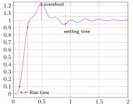
图 5.18 一个尚算有趣的传递函数阶跃响应的时域指标示例 \(H(s) = \dfrac{-400s+40000}{s^4+11s^3+720s^2+5200s+40000}\)所示。上升时间衡量从阶跃变化的 10% 过渡到 90% 所需的时间。调节时间衡量阶跃响应保持在给定范围内（此处为 ±5%）所需的时间。¶
扰动抑制 ——噪声、反电动势谐波和死区畸变都是扰动电机电流的效应。整定良好的电流控制环会将电流误差保持在较小水平。扰动抑制可以用刚度传递函数 \(H(s) = \partial V/\partial I\) 定量描述，它表示产生特定电流变化所需的电压扰动。 [1] 在闭环下、频率远低于电流环带宽时，该刚度可以非常大；但在开环和 high frequency 下，它就是定子的每相阻抗 \((R+j\omega_e L)\) 。
稳定性 ——我们希望电流振荡能衰减而非持续或增长。稳定性的一个重要指标是相位裕量 \(\phi_m\)。
{kind=link}
更具体地说，整定目标是 限制误差， 限制超调，和最大化带宽：
电流控制误差会在电机内引起振动和可听噪声。在极端情况下，它会增加额外功耗、损坏器件（若过流未被检测到）或引起误报故障（若过流被检测到）。
应选择合适的相位裕量以保持较小的超调。可接受的超调通常在 0–10% 范围内。这取决于应用以及电流参考的频率成分。从满负向电流到满正向电流的最坏阶跃未必在实际应用中出现，但如果出现，应避免引起误过流故障。例如，一个可接受高达 10 A 参考电流的电机驱动，若经历从 -10 A 到 +10 A 的最坏阶跃且有 10% 超调，将达到 +12 A 的最大电流。该最大电流与最低过流阈值之间应有足够的设计裕量，以容纳噪声同时仍避免误过流故障。
电流控制带宽一般应最大化，只要不降低稳定性或给电机电流引入过多噪声。工业电机驱动的典型 3dB 电流带宽为 PWM 频率的 5%–15%，即 20 kHz PWM 时为 1–3 kHz。即使位置或速度的整体电机控制带宽较慢（例如恒速运行的水泵或风机），这也是可取的。它能改善扰动抑制并缩短过流事件的持续时间。
确实需要快速加速的应用（例如机器人和电动出行）受电流环性能约束；速度环带宽一般比电流环带宽低 5–10 倍。
5.1.6.3. 整定不良与整定良好电流环的示例¶
评估电流环性能的最佳方法是在恒定速度下进行阶跃响应测试。在 MCAF 中最简单的方法是使用 测试框架的方波扰动 （见 对固定速度指令的速度控制器施加方波速度指令扰动）并采用以下方式之一：
夹紧转子以阻止运动
以开环换相运行电机，使用固定换相角（参见关于 换相问题）
控制电机恒速运行，使用低带宽速度环。（这允许电机轻微加速或减速；转子惯性会平滑速度。）
建议使用 20 Hz–200 Hz 范围内的方波扰动：对于 20 kHz 控制速率，这对应 motor.testing.sqwave.halfPeriod 在 500 到 50 之间的值。一般而言，方波周期应刚好让暂态完成即可。
注： 请特别注意电机换相。无传感器位置估计器会给换相角带来自身的误差源，在零速下用于测试电流环整定可能不实用。除特别说明外，本节所有图中的数据均来自使用 正交编码器 进行换相的电机。请参见最后一节关于 换相问题 以获取更多信息。
如果 正常的 MCAF 启动序列 无法正常运行或无法正确过渡到闭环换相，则电流环整定也可能需要开环换相运行。
5.1.6.3.1. 零速下的电流环整定¶
图 5.19 展示了 Nidec Hurst DMA0204024B101 电机在 MCAF 上、使用 dsPICDEM® MCLV‑2 开发板运行时的电流环阶跃响应示例，采用 motorBench® Development Suite.
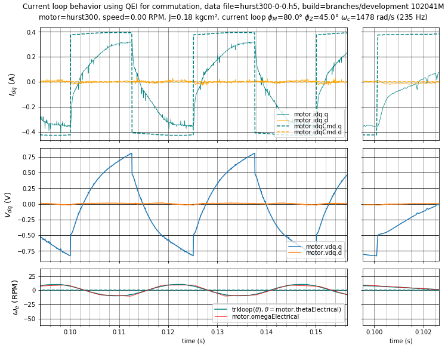
图 5.19 情形 0：电流环阶跃响应，相位裕量 \(\phi_m = 80^\circ\) ，交叉频率处 PI 相位滞后 \(\phi_z = 45^\circ\) （\(K_p =\) 0.414 V/A， \(K_i =\) 613 V/As）。本节所有情形均将死区从 2 μs 减小到 1.2 μs，以最小化死区畸变的影响。本节所含的阶跃响应图均在标题中包含相位裕量、交叉频率处 PI 相位滞后（定义见 性能准则一节 ）以及交叉频率 \(\omega_c\) 的值。¶
该电流环带宽较低——低到电流无法达到稳态值，因为允许速度变化，而速度变化引起的反电动势变化作为扰动作用于电流环。为避免此效应，机械时间常数 \(\tau_{m1} = \frac{2JR_s}{3K_e{}^2}\) 与电流环带宽的乘积应远大于 1。对于 Nidec Hurst DMA0204024B101，机械时间常数 \(\tau_{m1} =\) 为 3.25 ms，在本例（情形 0）中乘积 \(\omega_c\tau_{m1}\) = 4.8，不足以消除反电动势变化的影响。
使用同一电机和板卡的若干其他情形汇总于 表 5.1。
情形 |
\(\phi_m\) |
\(\phi_z\) |
\(\omega_c\) (rad/s) |
\(f_c\) (Hz) |
\(K_p\) (V/A) |
\(K_i\) (V/As) |
0 |
80.0° |
45.0° |
1478 |
235 |
0.414 |
613 |
1 |
70.0° |
25.0° |
3709 |
590 |
1.226 |
2121 |
2 |
45.0° |
12.0° |
12759 |
2031 |
4.487 |
12168 |
3 |
30.0° |
5.0° |
19662 |
3129 |
7.038 |
12107 |
4 |
55.0° |
3.0° |
12458 |
1983 |
4.473 |
2920 |
5 |
80.0° |
45.0° |
1355 |
216 |
0.418 |
566 |
下一个情形（1）如 图 5.20所示，相位裕量和交叉频率处 PI 相位略低，从而带宽更高、阶跃响应更好。其形状与情形 0 类似，但时间尺度快了 2.5 倍。
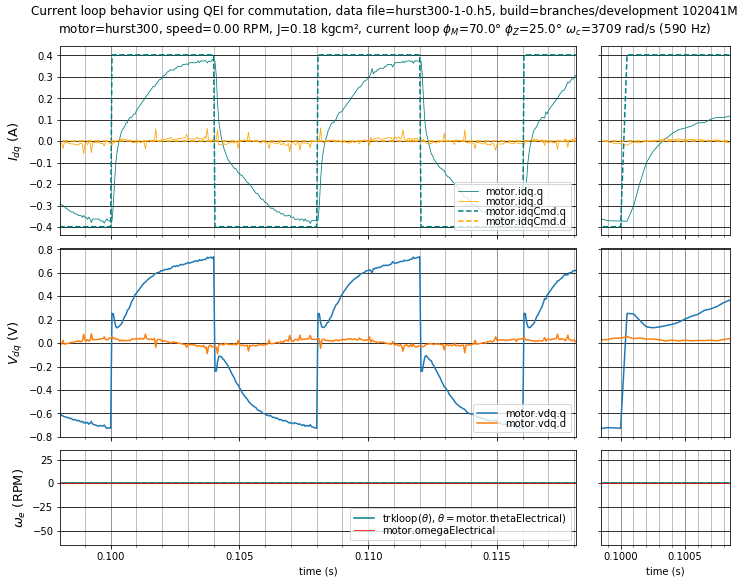
图 5.20 情形 1：电流环阶跃响应， \(\phi_m = 70^\circ,\;\phi_z = 25^\circ\) （\(K_p =\) 1.226 V/A， \(K_i =\) 2121 V/As）。¶
阶跃响应的早期部分（约前 100 μs）由比例增益 \(K_p\)主导。这会引起一个快速的电压脉冲。当电流接近其参考值且误差减小时，响应转由积分项主导；积分增益 \(K_i\) 决定该过渡发生的快慢。
情形 1 的响应仍可改进。
情形 2 如 图 5.21所示，展示了一个整定良好的电流环。其快速带宽约为 \(f_s/10\) （其中 \(f_s\) 为采样和控制速率），阶跃响应相当好且无超调。将带宽提升到 \(f_s/10\) 以上是可以做到的，但比较棘手，需要仔细处理离散时间设计以及采样到输出延迟。
再次注意，初始电压脉冲超出了维持电流在参考值所需的最终值。
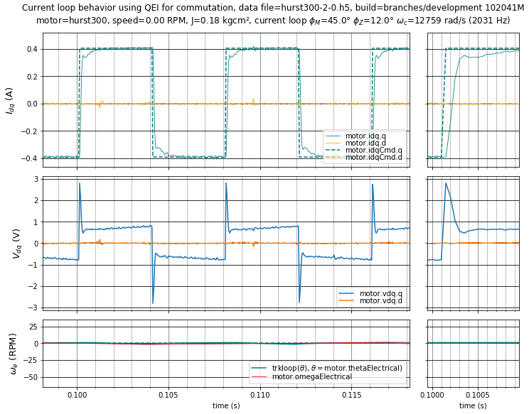
图 5.21 情形 2：整定良好的电流环阶跃响应， \(\phi_m = 45^\circ,\;\phi_z = 12^\circ\) （\(K_p =\) 4.487 V/A， \(K_i =\) 12168 V/As）。¶
情形 3 如 图 5.22所示，展示了一个增益过高的电流环，导致过大超调。此处超调仅约 12%，但若在 非零速度 下运行，超调会恶化。
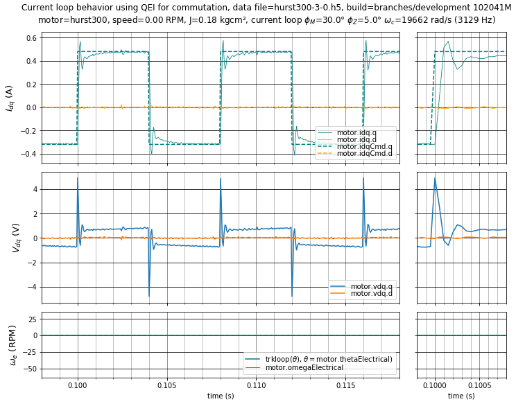
图 5.22 情形 3：高增益电流环阶跃响应， \(\phi_m = 30^\circ,\;\phi_z = 5^\circ\) （\(K_p =\) 7.038 V/A， \(K_i =\) 12107 V/As）。¶
情形 4 如 图 5.23所示，展示了一个比例增益大致相同 \(K_p\) 但积分增益低得多的电流环。比例增益带来非常好的短期响应，但低积分增益导致趋向最终值的调节时间慢得多。
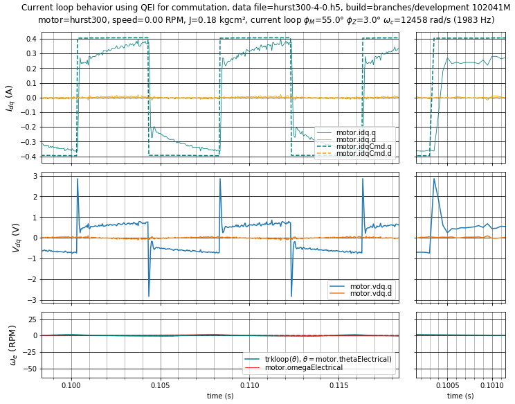
图 5.23 情形 4：电流环阶跃响应， \(\phi_m = 55^\circ,\;\phi_z = 3^\circ\) （\(K_p =\) 4.473 V/A， \(K_i =\) 2920 V/As）。¶
最后，情形 5 如 图 5.24所示，其相位裕量和交叉频率处 PI 相位滞后与情形 0 相同，但增加了外部惯性负载，使转子惯量约增大 3 倍。电流环整定变化不大，但请注意速度波动减小带来的电流环调节改善。
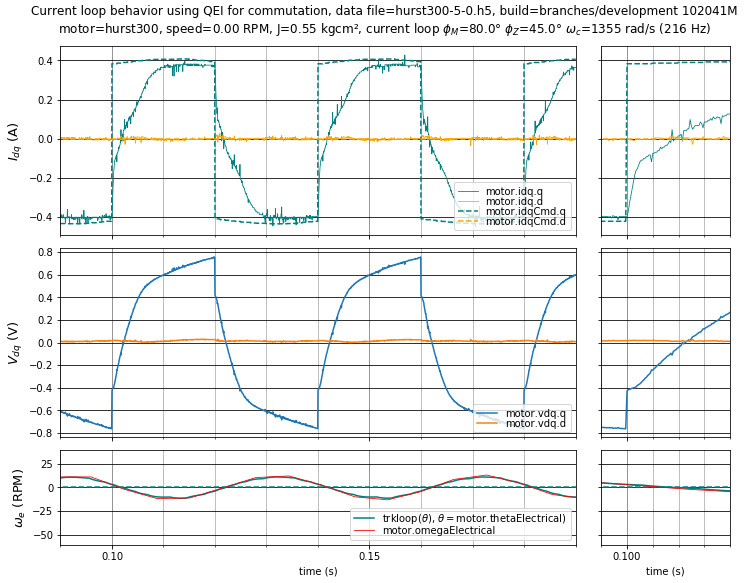
图 5.24 情形 5：电流环阶跃响应， \(\phi_m = 80^\circ,\;\phi_z = 45^\circ\) 但带有 \(J \approx 3J_0\) （\(K_p =\) 0.418 V/A， \(K_i =\) 566 V/As）¶
5.1.6.3.2. 非零速下的电流环整定¶
在低速下，电流环阶跃响应变化不大。
随着转子速度升高，d 轴和 q 轴之间存在交叉轴耦合效应，会使阶跃响应有所变化。 [2] 因此，在速度范围的上限验证电流环整定很重要。 为整定目的，避免电压饱和很重要，因此可使用升高的母线电压，或选择约为最大速度 80–90% 的速度。
下面是情形 1–3 在 1200 RPM 和 2400 RPM 下的阶跃响应。
在低增益控制器的情形 图 5.25 和 图 5.26中，与零速下看到的阶跃响应相比，死区畸变和反电动势谐波造成的电压扰动会引起中等程度的误差。
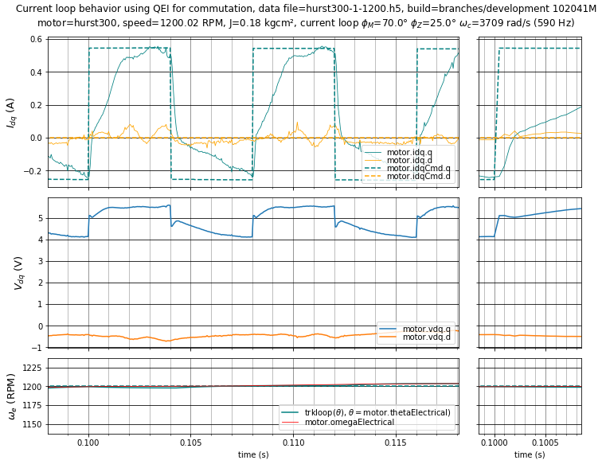
图 5.25 情形 1：低增益控制器的电流环阶跃响应， \(\phi_m = 70^\circ,\;\phi_z = 25^\circ\) （\(K_p =\) 1.226 V/A， \(K_i =\) 2121 V/As) at 1200 RPM.¶
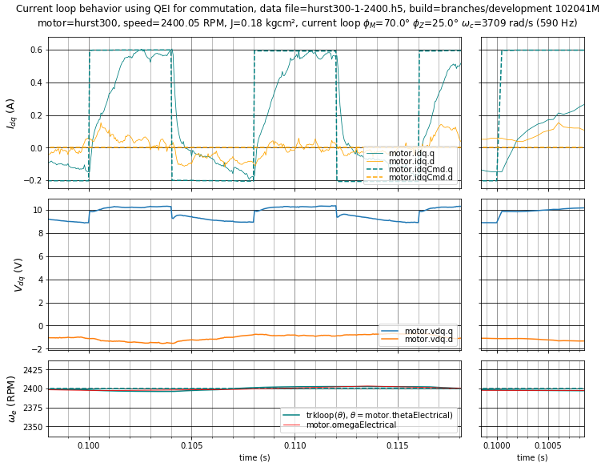
图 5.26 情形 1：低增益控制器的电流环阶跃响应， \(\phi_m = 70^\circ,\;\phi_z = 25^\circ\) （\(K_p =\) 1.226 V/A， \(K_i =\) 2121 V/As) at 2400 RPM.¶
在整定良好的情形 图 5.27 和 图 5.28中，增大的增益改善了扰动抑制，减小了相对于电流参考的误差。
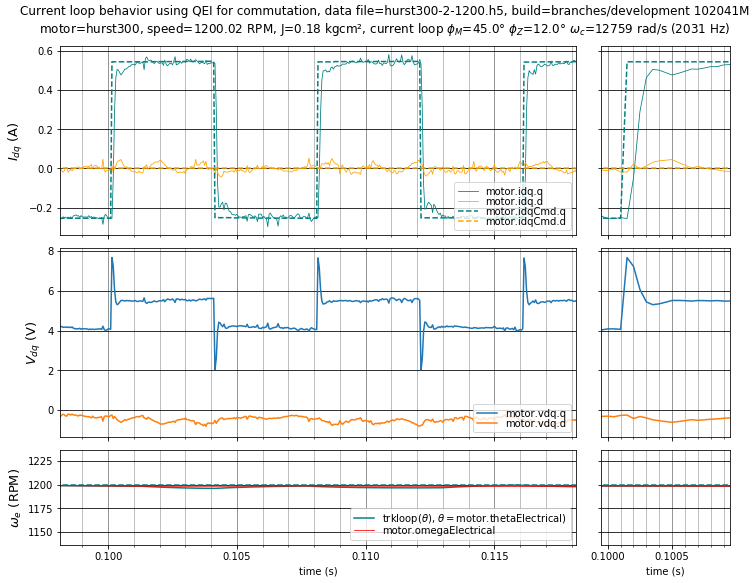
图 5.27 情形 2：整定良好的电流环阶跃响应， \(\phi_m = 45^\circ,\;\phi_z = 12^\circ\) （\(K_p =\) 4.487 V/A， \(K_i =\) 12168 V/As) at 1200 RPM.¶
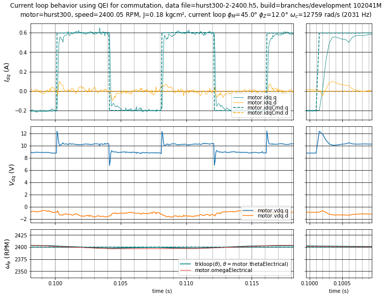
图 5.28 情形 2：整定良好的电流环阶跃响应， \(\phi_m = 45^\circ,\;\phi_z = 12^\circ\) （\(K_p =\) 4.487 V/A， \(K_i =\) 12168 V/As) at 2400 RPM.¶
在高增益的情形 图 5.29 和 图 5.30中，电流超调随速度升高而增大，在 2400 RPM 时达到 20% 超调。这是不希望的，且可能因以下几种原因变得比此处所示更糟：
电机参数的个体差异
驱动电子设备中电流检测电路的个体差异
电阻和反电动势随温度变化
电感随铁芯饱和变化
简而言之：尽可能避免超调，并为参数容差留出设计裕量。
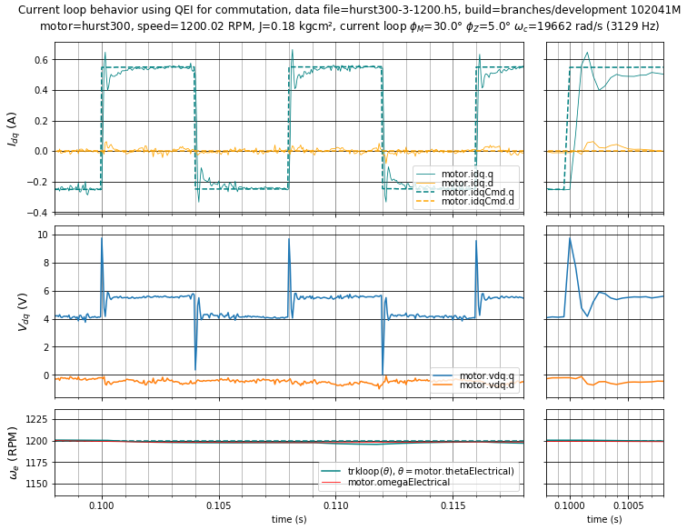
图 5.29 情形 3：高增益电流环阶跃响应， \(\phi_m = 30^\circ,\;\phi_z = 5^\circ\) （\(K_p =\) 7.038 V/A， \(K_i =\) 12107 V/As) at 1200 RPM.¶
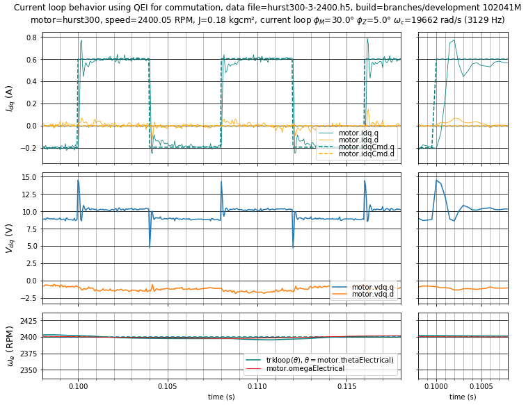
图 5.30 情形 3：高增益电流环阶跃响应， \(\phi_m = 30^\circ,\;\phi_z = 5^\circ\) （\(K_p =\) 7.038 V/A， \(K_i =\) 12107 V/As) at 2400 RPM.¶
5.1.6.3.3. 采样到更新延迟的影响¶
提供稳定高带宽电流环的一个关键瓶颈是采样到更新延迟 \(T_{su}\)。它是 ADC 输入被采样的时刻与晶体管占空比基于这些采样值发生变化的时刻之间的延迟。
减小该延迟 \(T_{su}\) 能在给定带宽下获得更稳定的电流环，或在同等稳定性下获得更高带宽。这种差异在高带宽（采样频率的 5% 或更高，例如 20 kHz 采样和更新速率下 1 kHz 及以上）时最为显著
使用 双更新 PWM 有助于减小采样到更新延迟，推荐使用。
5.1.6.4. 整定准则与 motorBench® Development Suite¶
5.1.6.4.1. 性能准则定义¶
motorBench® Development Suite 的自动整定功能允许对电流环和速度环各调整两个性能准则：
相位裕量 \(\phi_m\) 是 -180° 与开环增益传递函数在交叉频率 \(\omega_c\)处相位的差值，此处开环增益幅值为 1。它代表距失稳点的设计裕量。减小相位裕量通常会同时提高比例增益 \(K_p\) 和积分增益 \(K_i\)。这可以提高最大可实现带宽并改善参考值跟踪和扰动抑制性能，但代价是稳定性下降。
交叉频率处的 PI 相位滞后 \(\phi_z = \tan^{-1} K_i/K_p\omega_c\) 是 PI 控制器在交叉频率处的相位滞后。减小交叉频率处 PI 相位滞后会降低 PI 控制器的转折频率（或“零点”），从而减小积分增益 \(K_i\) 并增大比例增益 \(K_p\)。在相位裕量固定时，这通常会提高电流环带宽，但代价是低频增益下降，从而降低控制器的扰动抑制能力。
相位裕量对具备控制系统基础知识的工程师可能很熟悉，但交叉频率处 PI 相位滞后可能不然。 图 5.31 展示了 Nidec Hurst DMA0204024B101 电流环传递函数的伯德图，包含以下元素：
被控对象传递函数 G(s)（表示电压到电流增益）以细点划线绘制
PI 控制器传递函数 K(s)（表示电流到电压增益）以虚线绘制
开环增益传递函数 G(s)K(s) 以实线绘制
这些传递函数在交叉频率处求值并用小圆点标记。注意在 图 5.31中，开环增益传递函数的相位为 -105°，以满足 75° 的相位裕量约束。
PI 控制器零点（即比例增益与积分增益相等、相位为 -45° 的频率）以空心圆标记。PI 控制器零点与交叉频率之比为 \(\tan \phi_z\)，因此交叉频率处 PI 相位滞后值越小，控制器零点就被推到越低的频率。
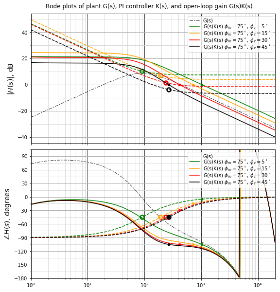
图 5.31 在 75° 相位裕量下，若干交叉频率处 PI 相位滞后的伯德图。¶
5.1.6.4.2. 示例情形的伯德图¶
图 5.32 展示了本节前面讨论的情形 0–4 的示例伯德图。
情形 2（\(\phi_m = 45^\circ,\;\phi_z = 12^\circ\)）和情形 3（\(\phi_m = 30^\circ,\;\phi_z = 5^\circ\)）的低频开环增益最高，但情形 3 较低的相位裕量使其不可取。
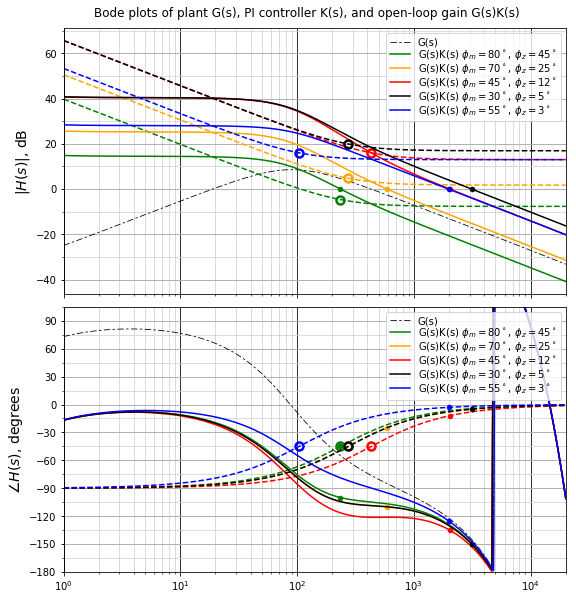
图 5.32 本节所讨论示例情形的电流环传递函数伯德图¶
5.1.6.4.3. 性能准则的默认值¶
motorBench 中为电流环选择的默认值® Development Suite 1.15–2.35 版本，即 \(\phi_m = 80^\circ,\;\phi_z = 45^\circ\)，对非常宽范围的电机都是稳定的。但它们也极其保守，导致电流环带宽相当低。
Microchip 人员正在重新评估这些默认值以给出更高性能的建议。在此期间，如果可以进行仔细的阶跃响应测试，可考虑将相位裕量降至 50°–70° 范围，并将交叉频率处 PI 相位滞后降至 8°–20° 范围。 未经测试，不要将这些值降到默认值以下。 未经仔细研究，不建议将 PI 相位滞后降到 5° 以下。
自动整定使用这些性能准则，而非 PI 增益或环路带宽，作为一种归一化指标，它在较宽范围的电机和驱动组合中具有一定的适用性。此处整定良好情形（\(\phi_m = 45^\circ,\;\phi_z = 12^\circ\)）中所示的 Nidec Hurst DMA0204024B101 的相位裕量和交叉频率处 PI 相位滞后的确切值是否适用于所有电机？否。每个电机和驱动组合都有不同的特性，且常常存在可能需要更高或更低设置的微妙二阶效应。
如果您的电机似乎难以整定，请 联系 Microchip 以便我们改进建议。
5.1.6.5. 在 MCAF 中调整电流控制增益¶
在 MCAF 中调整电流控制增益的最佳方式是在 motorBench \(\phi_m\) ，交叉频率处 PI 相位滞后 \(\phi_z\)的 Tune（整定）页面中更改性能准则（相位裕量® Development Suite）。但这可能需要反复迭代生成代码。
要更快地细调电流环，可在运行时直接更改电流环增益，即使用实时诊断工具调整 d 轴和 q 轴电流环的比例和积分增益，所调整的 MCAF 变量如 代码清单 5.1。
motor.idCtrl.kp
motor.idCtrl.ki
motor.iqCtrl.kp
motor.iqCtrl.ki
（注意还有与增益同名的运行时移位计数，前面带一个 n，例如 motor.idCtrl.nkp 为对应于 .kp的移位计数。如果所需增益会溢出（超过 32767 个计数），则将移位计数减一并将增益计数除以 2。 .kp = 38000， .nkp = 15（无法表示）等价于 .kp = 19000， .nkp = 14（可表示）。
推荐方法如下：
复制 motorBench® Development Suite 生成的初始增益，位于
foc_params.h在运行时调整电流环增益，使用实时诊断工具进行阶跃响应测试。需要观察的最重要的软件变量是
motor.idq.q——q 轴电流motor.idqCmd.q——q 轴电流参考motor.vdq.q——PI 控制器输出的 q 轴电压
通过实验确定所需的软件增益
计算与软件增益对应的实际工程增益
调整 \(\phi_m\) 和 \(\phi_z\) 在 motorBench 的 Tune（整定）页面中® Development Suite，以产生接近所需实际工程增益的值。（目前 Tune 页面尚不支持直接输入 PI 增益，但未来版本可能会考虑。）
5.1.6.5.1. 示例¶
代码清单 5.2 展示了 foc_params.h 中由 motorBench® Development Suite.
//************** PI 系数 **************
//// 电流环
// 相位裕量 = 80 度
// 交叉频率处 PI 相位 = 45.000 度
// 交叉频率 = 1.478 k rad/s (235.238 Hz)
/* 电流环比例增益 */
#define KIP 2263 // Q15( 0.06906) = +414.36768 mV/A = +414.42006 mV/A - 0.0126%
#define KIP_Q 15
/* 电流环积分增益 */
#define KII 167 // Q15( 0.00510) = +611.57227 V/A/s = +612.53173 V/A/s - 0.1566%
#define KII_Q 15
假设使用实时诊断工具，通过以下软件增益可获得整定良好的电流环响应：
motor.idCtrl.kp = motor.iqCtrl.kp = 24500motor.idCtrl.ki = motor.iqCtrl.ki = 3300
工程单位可通过将原始工程单位增益乘以新软件值与旧软件值之比来计算：
\(K_p\) = (24500/2263) × 0.41437 = 4.4861 V/A
\(K_i\) = (3300/167) × 611.57 = 12085 V/As
然后在 motorBench \(\phi_m\) ，交叉频率处 PI 相位滞后 \(\phi_z\) 的 Tune（整定）页面中调整电流环的相位裕量® Development Suite，以接近这些值。（同样，减小相位裕量应同时增大 \(K_p\) 和 \(K_i\)；减小交叉频率处 PI 相位滞后会增大 \(K_p\) 并减小 \(K_i\).)
5.1.6.6. 电流环整定过程中的换相角问题¶
电流环整定期间换相角精度并非特别关键，只要总误差可控即可。通常 15° 电角度的换相角误差对磁场定向控制是可接受的。高频成分（换相角振荡）会表现为与电流矢量正交的扰动；在 d 轴电流近似为零、电流矢量主要沿 q 轴的正常情况下，d 轴电流会显示来自换相角误差的振荡，而 q 轴电流中的类似振荡则小得多。
如果可能，请使用正交编码器进行换相来完成阶跃响应整定。使用相对较慢的跟踪环路时间常数：5 ms 是一个不错的默认选择。
如果无法使用正交编码器，则零速下可能无法进行闭环换相运行。（ AN1292 PLL 估计器 在零速下通常稳定，但无法提供有用转矩，而 ATPLL 在零速附近存在稳定性问题。）如果是这种情况，请改用开环换相，使用测试框架和实时诊断工具采取以下步骤：
开启 换相覆盖
通过设置
motor.testing.overrideOmegaElectrical = 0来使用固定换相角，该变量控制换相频率。
在零速下，机械夹紧转子可能有帮助，但并非必需，且无法抑制小幅高频振动。
在非零速下检查电流环整定应使用闭环换相。再次建议使用正交编码器，但只要速度足够大以获得良好性能，也可使用无传感器估计器进行换相。
5.1.6.6.1. 使用 AN1292 PLL 的示例¶
可在零速下使用 AN1292 PLL 进行闭环换相，完成类似的电流环评估。 图 5.33， 图 5.34，和图 5.35 展示了 Nidec Hurst DMA0204024B101 电机使用本节前面所用整定良好电流环增益（\(\phi_m = 45^\circ,\;\phi_z = 12^\circ\)）的电流环评估。为避免电流参考变化过快，通过选择 \(\phi_m = 70^\circ,\;\phi_z = 20^\circ\)，将速度环带宽从默认整定降至约 2.2 Hz。（这通常并非必要——只是让电流环整定更容易，避免不必要的干扰；电流环整定完成后可使用更高带宽的速度环。）
由于估计器的角度和速度不确定性，可见电流参考以 1 ms 间隔出现的阶跃，但除此之外，电流环整定的表现与使用正交编码器作为换相角的情形几乎完全相同。
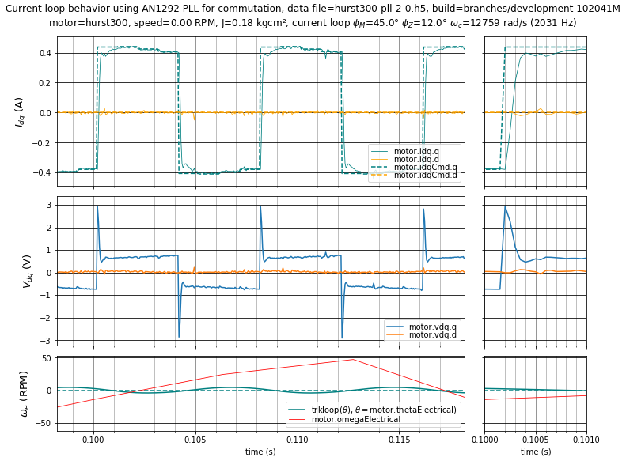
图 5.33 使用 PLL 的情形 2：整定良好的电流环阶跃响应， \(\phi_m = 45^\circ,\;\phi_z = 12^\circ\) （\(K_p =\) 4.487 V/A， \(K_i =\) 12168 V/As）在 0 RPM。速度整定具有 \(\phi_m = 70^\circ,\;\phi_z = 20^\circ\)。¶
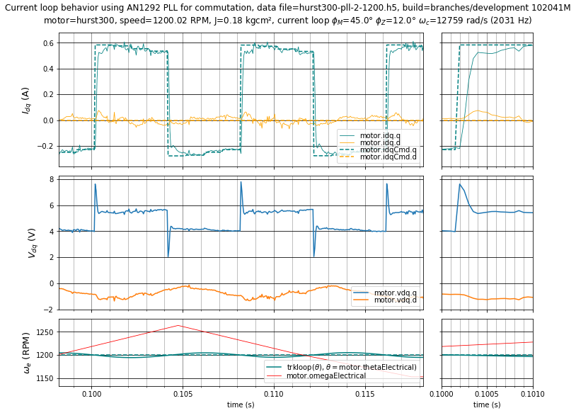
图 5.34 使用 PLL 的情形 2：整定良好的电流环阶跃响应， \(\phi_m = 45^\circ,\;\phi_z = 12^\circ\) （\(K_p =\) 4.487 V/A， \(K_i =\) 12168 V/As）在 1200 RPM。速度整定具有 \(\phi_m = 70^\circ,\;\phi_z = 20^\circ\)。¶
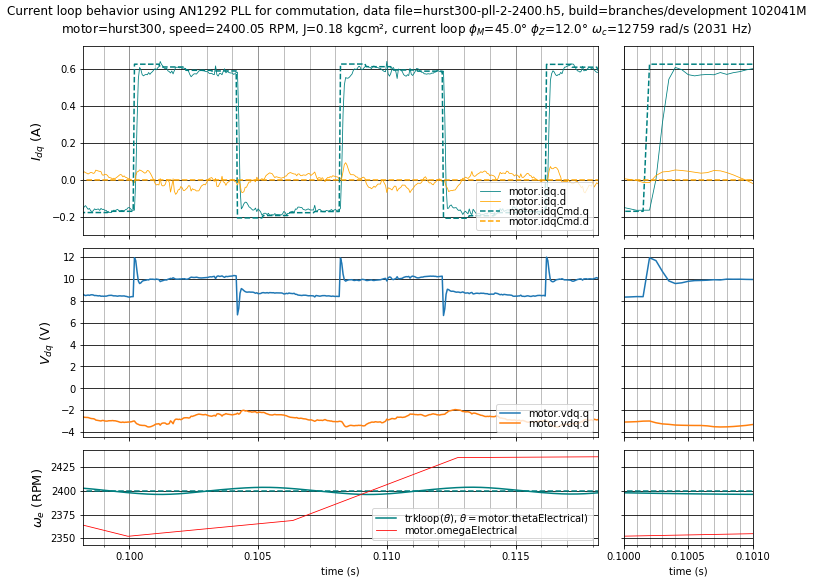
图 5.35 使用 PLL 的情形 2：整定良好的电流环阶跃响应， \(\phi_m = 45^\circ,\;\phi_z = 12^\circ\) （\(K_p =\) 4.487 V/A， \(K_i =\) 12168 V/As）在 2400 RPM。速度整定具有 \(\phi_m = 70^\circ,\;\phi_z = 20^\circ\)。¶